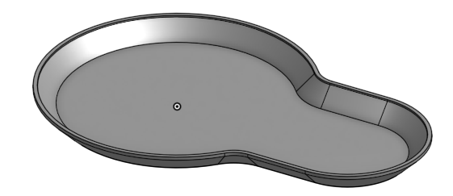
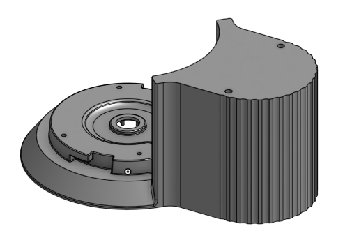
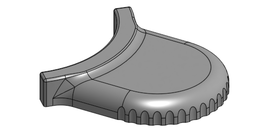
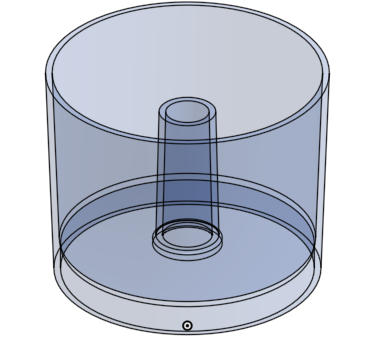
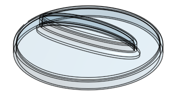
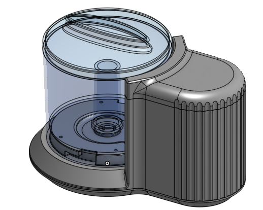

Week 8 Homework << Previous Next >> Week 9 Homework
Week 9 Lesson Plan
課綱：依照本章節所要介紹的功能來繪製模型。
名稱：迷你斬波器（實體連結在這）
| Part零件名稱 |
Part零件外觀圖 |
| Base |
 |
| Main Body |
 |
| Top |
 |
| Bowl |
 |
| Cover |
 |
____________________________________________________________________________
將步驟由上至下逐個介紹各特徵和草圖的用途
依文字顏色區分零件上的草圖跟特徵
★前三個零件是屬於同一模型繪製在做分割，故使用相同顏色一起介紹！
- 草圖1：在上基準面畫出主體外型。
- 擠出1：填料，長出所畫的最外框(Z軸)。
- 擠出2：除料，選擇草圖1的內圓，為斬波器的碗槽。
- 草圖2：在前基準面畫出待會除料的外殼前視圖。
★並將各圓柱中心的中心線給投影出來，之後步驟會用到！
- 旋轉1：除料，左半邊的主體就有碗槽的形狀了。
- 倒角1：將底部的面給倒角。
- 草圖3：選擇主體最上方，並投影出右半邊的模型，並在中間畫個孔。
- 擠出3：除料，在主體上的外觀做美化。
- 草圖4、5：在主體左邊建立圖形。
- 擠出4、5、6：為碗槽的基底(Z軸)。
- 拔模1：選擇擠出5的面，拔模角度為45度。
- 圓角1、2：選擇拔模上、下方的邊。
- 拔模2：選擇擠出6的面，拔模角度為2度。
★因為拔模角度很小，所以拔模完後，須從上視圖來檢查是否錯邊。此拔模因為是上大下小，所以由上視圖看只會有一條邊線！
- 草圖6：為碗槽基底卡損的草圖。
- 擠出7、8：除料，因長度不一樣所以分開除。
- 環狀複製排列1：是在圓上編輯，所以使用環狀複製在對角處新增一樣的模形。
- 圓角3、4、5、6、7：為主體上的倒圓角，因為有些邊無法同時圓角，所以必須分批。
- 草圖7：為切割面的參考線。
- 擠出9：曲面填料，選取草圖7的線。
- 分割1：切割主體，使其分成兩部分。
★此切割的目的，主要是接下來薄殼的需求！
- 草圖8：此為主體美化的草圖。
- 擠出10：填料，為一個長條圓柱。
- 環狀複製排列2：複製擠出10的圓柱，且相鄰。
- 布林運算1：差集，讓其圓柱與主體的干涉變為除料功能，且不保留工具。
- 平面1：為主體上方的面平移，為切割面的參考面。
- 分割2：切割主體，使其分成兩部分。
★加上先前的分割1，此時主體共為三部分（在零件目錄裡）！
- 變數：選擇長度選項，輸入名稱為thk、值為0.075。
★此功能為接下來薄殼厚度值得輸入用途！
- 薄殼1：隱藏其他兩part，薄殼Base零件，並在薄殼厚度那欄輸入變數#thk。
★輸入變數後只要按Enter，系統就會自動轉換成0.075，此做法是避免有不必要的錯誤！
- 薄殼2：薄殼Main Body。
- 薄殼3：薄殼Top。
- 草圖9：為斬波器的軸心放置處草圖。
- 擠出11：貫穿除料(限Main Body)。
- 草圖10：用點功能選取Main Body下方面的四個點。
- Screw Boss1、2：點選草圖10的四個點，建立殼內的支架。
★此功能在W7有介紹到！
- 草圖11：用點功能選取Top下方面的兩個點。
- Screw Boss3：點選草圖11的兩個點，建立殼內的支架。
- 平面2：為RIB功能的基準面。
- 草圖12：為網狀線，亦可用RIB功能形成模形。
- RIB1：為Main Body殼內的網肋。
- 草圖13：在前基準面下繪製碗和蓋子的視圖。
- 旋轉2：旋轉出碗的曲面。
- 加厚1：以碗的曲面來加厚，形成碗的模型。
- 旋轉3：將草圖13上方的面給填料。
- 旋轉4：將草圖13最上方的線長出曲面，為蓋子把手的頂面。
- 擠出12：填料，以草圖1所畫的把手為基準。
★使用兩方向，第一方向為草圖1到旋轉4的面，第二方向為草圖1到蓋子的面！
- 圓角8：為蓋子上的圓角。
- 薄殼4：薄殼Cover。
最後將Bowl、Cover的兩個零件外觀使用半透明，方便他人可以直接觀看內部。
_______________________________________________________________________________________
完成品視圖

Week 8 Homework << Previous Next >> Week 9 Homework